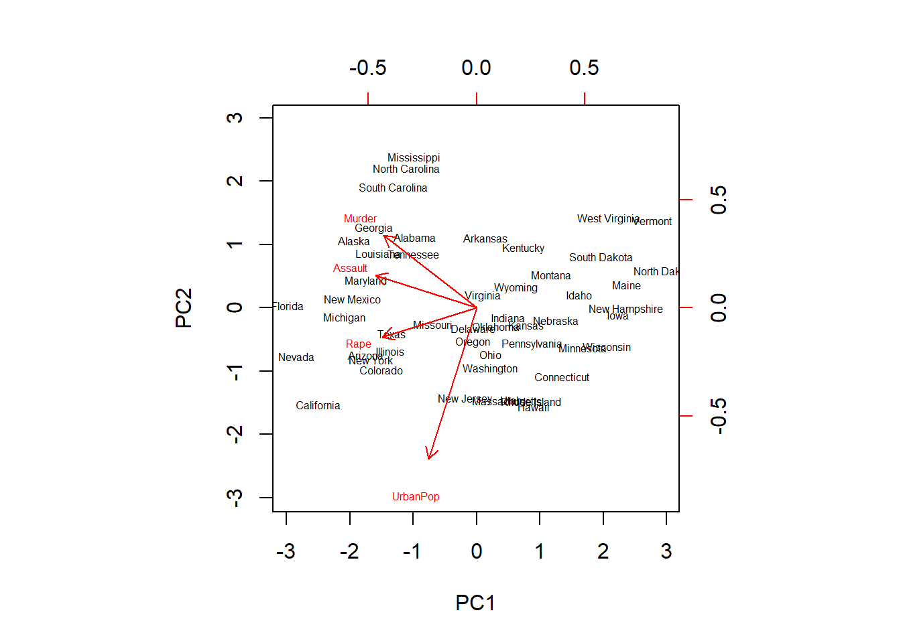
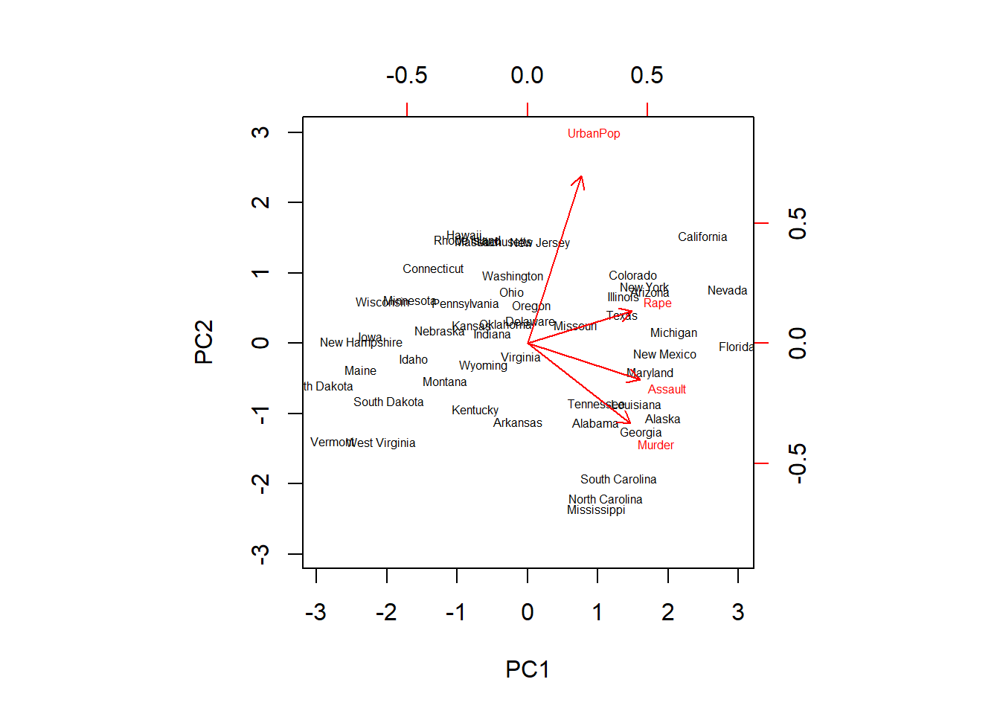
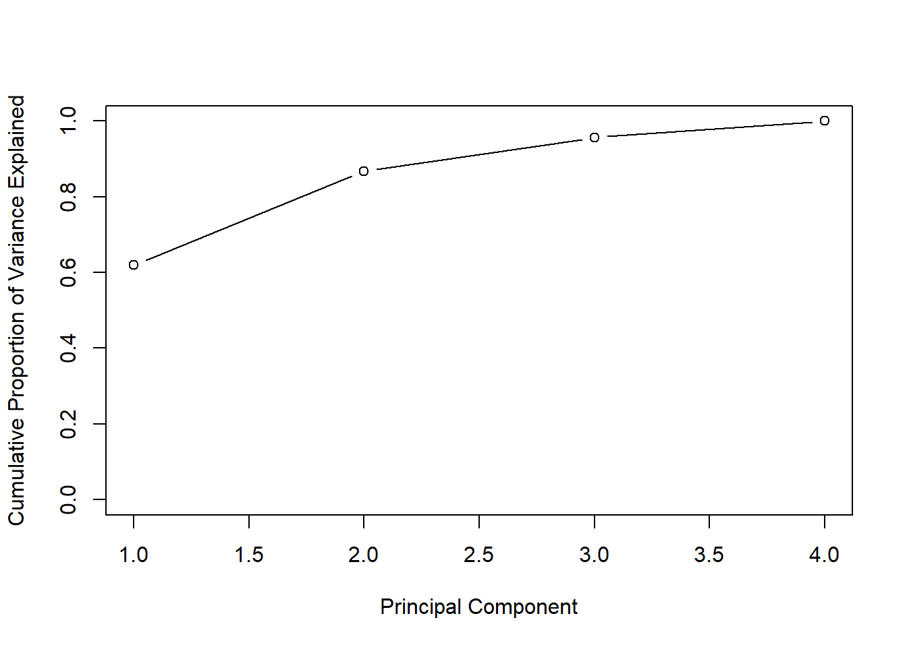

10 PCA Lab
1. Objective
We are trying to identify the principal components in the dataset. Principal components are essentially linear combinations of the different variables in the data, set up to have as high a variance as possible, in an attempt to explain as much of the variation in the data as possible. This is done for 2 reasons:
To perform explanatory data analysis, and uncover relationships between the variables in the dataset; for example, which variables are closely correlated. This is the topic of this lab.
To use the principal components in a regression setting (see: Principal Component Regression). The derived principal components are used in a regression model instead of the original variables, since we can usually explain the same amount of variation in the data with a lower number of P.C. than the number of original variables. This method has the advantage of producing models with lower complexity and hence, it reduces the variance of estimates.
2. Dataset Background
We use the ‘USArrests’ dataset, which is part of the base R package (for more information, type ?USArrests in your R console). This is a real dataset; we do not create it on the fly. We use the attach() function to quickly access it throughout this script.
attach(USArrests)Let’s examine the dataset. The dataset has 50 rows, one for each US state, and 4 columns: (Murder, Assault, UrbanPop, and Rape).
(states = row.names(USArrests))## [1] "Alabama" "Alaska" "Arizona" "Arkansas"
## [5] "California" "Colorado" "Connecticut" "Delaware"
## [9] "Florida" "Georgia" "Hawaii" "Idaho"
## [13] "Illinois" "Indiana" "Iowa" "Kansas"
## [17] "Kentucky" "Louisiana" "Maine" "Maryland"
## [21] "Massachusetts" "Michigan" "Minnesota" "Mississippi"
## [25] "Missouri" "Montana" "Nebraska" "Nevada"
## [29] "New Hampshire" "New Jersey" "New Mexico" "New York"
## [33] "North Carolina" "North Dakota" "Ohio" "Oklahoma"
## [37] "Oregon" "Pennsylvania" "Rhode Island" "South Carolina"
## [41] "South Dakota" "Tennessee" "Texas" "Utah"
## [45] "Vermont" "Virginia" "Washington" "West Virginia"
## [49] "Wisconsin" "Wyoming"(names(USArrests))## [1] "Murder" "Assault" "UrbanPop" "Rape"3. Dataset Exploration
Using the apply() function, we can quickly examine the means and variances of each variable. We apply the mean() and var() functions directly over the full 4 columns in the dataset:
(apply(USArrests,2,mean))## Murder Assault UrbanPop Rape
## 7.788 170.760 65.540 21.232(apply(USArrests,2,var))## Murder Assault UrbanPop Rape
## 18.97047 6945.16571 209.51878 87.72916We can immediately see that the different variables have very different distributions, both in terms of their means and variances.
4. Variable Transformation
We will have to scale the variables before proceeding with Principal Components Analysis. Remember that PCA creates linear combinations of the different variables that attempt to maximize total variance; in order for the the principal components to be relevant, we must scale the variables first, otherwise each PC will simply prominently feature the variable with the largest mean & variance - here, Assault.
This is done through the scale=TRUE argument when running PCA; see section 5 below.
5. Running PCA - the prcomp() function
We use the prcomp() function to perform PCA - this is one of multiple ways it can be achieved. NB - scaling: by default, the prcomp() function will set the variable means to 0. Using scale=TRUE also scales the variables to have standard deviation = 1.
pr.out <- prcomp(USArrests,scale=TRUE)We can still access the means and standard deviations of the variables used for scaling before calling the prcomp() function; this is contained within the pr.out results:
(names(pr.out))## [1] "sdev" "rotation" "center" "scale" "x"# namely the center & scale elements:
(pr.out$center)## Murder Assault UrbanPop Rape
## 7.788 170.760 65.540 21.232(pr.out$scale) ## Murder Assault UrbanPop Rape
## 4.355510 83.337661 14.474763 9.366385Another important element of the PCA output is the rotation matrix, which provides the principal component loading vectors:
(pr.out$rotation)## PC1 PC2 PC3 PC4
## Murder -0.5358995 0.4181809 -0.3412327 0.64922780
## Assault -0.5831836 0.1879856 -0.2681484 -0.74340748
## UrbanPop -0.2781909 -0.8728062 -0.3780158 0.13387773
## Rape -0.5434321 -0.1673186 0.8177779 0.08902432In general, we can expect the number of informative principal component vectors to be the smallest between the number of variables (p) and the # of observations in the dataset (n) minus one: min(n-1,p) This holds true in this case and we see that ‘rotation’ provides us with the 4 principal component loading vectors, and p = 4.
Usually, to obtain the principal component score vectors, we must multiply loading vectors by the data. The prcomp() function simplifies this by providing them as the ‘x’ element in the output:
(pr.out$x)## PC1 PC2 PC3 PC4
## Alabama -0.97566045 1.12200121 -0.43980366 0.154696581
## Alaska -1.93053788 1.06242692 2.01950027 -0.434175454
## Arizona -1.74544285 -0.73845954 0.05423025 -0.826264240
## Arkansas 0.13999894 1.10854226 0.11342217 -0.180973554
## California -2.49861285 -1.52742672 0.59254100 -0.338559240
## Colorado -1.49934074 -0.97762966 1.08400162 0.001450164
## Connecticut 1.34499236 -1.07798362 -0.63679250 -0.117278736
## Delaware -0.04722981 -0.32208890 -0.71141032 -0.873113315
## Florida -2.98275967 0.03883425 -0.57103206 -0.095317042
## Georgia -1.62280742 1.26608838 -0.33901818 1.065974459
## Hawaii 0.90348448 -1.55467609 0.05027151 0.893733198
## Idaho 1.62331903 0.20885253 0.25719021 -0.494087852
## Illinois -1.36505197 -0.67498834 -0.67068647 -0.120794916
## Indiana 0.50038122 -0.15003926 0.22576277 0.420397595
## Iowa 2.23099579 -0.10300828 0.16291036 0.017379470
## Kansas 0.78887206 -0.26744941 0.02529648 0.204421034
## Kentucky 0.74331256 0.94880748 -0.02808429 0.663817237
## Louisiana -1.54909076 0.86230011 -0.77560598 0.450157791
## Maine 2.37274014 0.37260865 -0.06502225 -0.327138529
## Maryland -1.74564663 0.42335704 -0.15566968 -0.553450589
## Massachusetts 0.48128007 -1.45967706 -0.60337172 -0.177793902
## Michigan -2.08725025 -0.15383500 0.38100046 0.101343128
## Minnesota 1.67566951 -0.62590670 0.15153200 0.066640316
## Mississippi -0.98647919 2.36973712 -0.73336290 0.213342049
## Missouri -0.68978426 -0.26070794 0.37365033 0.223554811
## Montana 1.17353751 0.53147851 0.24440796 0.122498555
## Nebraska 1.25291625 -0.19200440 0.17380930 0.015733156
## Nevada -2.84550542 -0.76780502 1.15168793 0.311354436
## New Hampshire 2.35995585 -0.01790055 0.03648498 -0.032804291
## New Jersey -0.17974128 -1.43493745 -0.75677041 0.240936580
## New Mexico -1.96012351 0.14141308 0.18184598 -0.336121113
## New York -1.66566662 -0.81491072 -0.63661186 -0.013348844
## North Carolina -1.11208808 2.20561081 -0.85489245 -0.944789648
## North Dakota 2.96215223 0.59309738 0.29824930 -0.251434626
## Ohio 0.22369436 -0.73477837 -0.03082616 0.469152817
## Oklahoma 0.30864928 -0.28496113 -0.01515592 0.010228476
## Oregon -0.05852787 -0.53596999 0.93038718 -0.235390872
## Pennsylvania 0.87948680 -0.56536050 -0.39660218 0.355452378
## Rhode Island 0.85509072 -1.47698328 -1.35617705 -0.607402746
## South Carolina -1.30744986 1.91397297 -0.29751723 -0.130145378
## South Dakota 1.96779669 0.81506822 0.38538073 -0.108470512
## Tennessee -0.98969377 0.85160534 0.18619262 0.646302674
## Texas -1.34151838 -0.40833518 -0.48712332 0.636731051
## Utah 0.54503180 -1.45671524 0.29077592 -0.081486749
## Vermont 2.77325613 1.38819435 0.83280797 -0.143433697
## Virginia 0.09536670 0.19772785 0.01159482 0.209246429
## Washington 0.21472339 -0.96037394 0.61859067 -0.218628161
## West Virginia 2.08739306 1.41052627 0.10372163 0.130583080
## Wisconsin 2.05881199 -0.60512507 -0.13746933 0.182253407
## Wyoming 0.62310061 0.31778662 -0.23824049 -0.164976866The x matrix is 50x4 in this case, with every column corresponding to a principal component score vector in order - PC1, PC2, etc.
(dim(pr.out$x))## [1] 50 4Now let us look at the first two PCs in a biplot. Biplots are named after their ability to simultaneously display the principal component scores and loadings.
biplot(pr.out,scale=0)
For a specific variable, the PC1 loading is the upper axis, and the PC2 loading is the right axis. For example, the plot tells us that Rape has a loading of -0.54 on the first component and -0.17 on the second component - this is where the word ‘Rape’ stands on the plot.
The lab also illustrates how these vector representations can easily be mirrored by switching the signs of the vectors used - and how this shows that principal components are only unique up to a sign change:
pr.out$rotation <- -pr.out$rotation
pr.out$x <- -pr.out$x
biplot(pr.out,scale = 0)
We now see an exact mirror of the plot previously obtained. Note how Rape now has a loading of 0.54 on the first component and 0.17 on the second component.
This plot does a good job at providing us with information on the variables. We see that Murder, Assault and Rape are closely packed together on the graph, indicating that they are highly correlated. On the other hand, UrbanPop is further apart, indicating a lower correlation with the other 3 variables.
As mentioned previously, the point of using principal components is to try to explain as much of the variation in the data as possible through them. Therefore, we would like to check a figure for this, and see how well they perform. We start by taking the ‘sdev’ element from the pr.out output, which shows the standard deviation of each principal component:
(pr.out$sdev)## [1] 1.5748783 0.9948694 0.5971291 0.4164494# By squaring these figures, we obtain the variance explained by each principal component:
pr.var <- pr.out$sdev^2
(pr.var)## [1] 2.4802416 0.9897652 0.3565632 0.1734301# And to see the proportion of variation explained by each PC, we can divide its variance by the sum
# of variances:
pve <- pr.var / sum(pr.var)
(pve)## [1] 0.62006039 0.24744129 0.08914080 0.04335752# For example we see that the first principal component explains a bit over 62% of the variation in the data.
# We also present this in visual form as follows.
plot(pve, xlab="Principal Component", ylab=" Proportion of Variance Explained ",ylim=c(0,1) ,type='b')
# Another visualization shows the cumulative amount of variance explained by the different PCs:
plot(cumsum(pve),xlab="Principal Component",ylab ="Cumulative Proportion of Variance Explained",
ylim=c(0,1), type='b')
# Note the use of the cumsum() function.